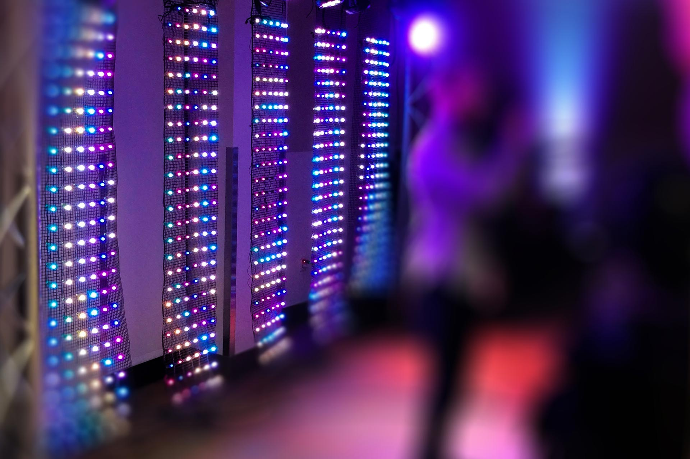

On July 30, 2017, CymaSpace will be partnering with the Oregon Association of the Deaf (OAD) in its fourth annual DeafFest at Oaks Park. CymaSpace will be making an appearance at DeafFest IV with its own vendor exhibit available in the afternoon.
In the evening, CymaSpace will support OAD by having a team of volunteers prepare the stage for the conference performance. The performance will start at 7:00 PM and feature Indian Deaf dancers, Veena and Vijay Advani. The dancers will be performing an Indian and Bollywood dance on a vibrating stage. This performance is an opportunity for DHH and hearing audiences to learn about the Indian Deaf culture. After the dancers end their show, CymaSpace will continue to assist OAD in removing the equipment.

The performance will feature our Cymatic LED racks. These weatherized, self-contained, modular LED curtain racks are designed for plug-and-play operation with no external lighting controller hardware or computer/software required. Our LED Racks are the most economical option for adding a dazzling Cymatic light display to your event and since they contain an embedded microprocessor and internal microphone, can be set-up without the need for a lighting or sound engineer. These racks are available for you to rent. The link is down below.CymaSpace is currently looking for volunteers. There are opportunities to get involved and assist by volunteering at the exhibit and the stage. CymaSpace is looking for American Sign Language (ASL) users who can volunteer as interpreters at the vendor exhibit for all three shifts.
If you are interested in volunteering for this event, please contact us at .